Get started
Interactive tutorials
Phoenix can teach itself. A lesson walks you through a task one step at a time: a small window says what to do, and the control to use next is circled on the screen.
Start a lesson
- Choose , or click Tutorials... on the start screen.
- Pick a lesson. Each shows a picture of how it turns out, how long it takes, what it is about and whether you have finished it; the one picked plays its picture beside the list. The buttons along the top (Animation, Motion Graphics, Rigging and the rest) show only the lessons about that; All shows them all again.
- Click Start. The lesson opens a new document of its own, so your work is never touched.
Most steps wait for you to do what they ask, such as choosing a tool, drawing a shape or inserting a keyframe, and move on by themselves when you have. Next skips a step, and Previous goes back one, undoing what that step did. Drag the step window anywhere; it stays where you put it.
To see how a lesson is meant to turn out, click Show Final in the step window, or select the lesson in the Tutorials dialog and click Show Final there. The finished document opens as an untitled copy in a tab of its own, so you can compare it with yours and switch back to carry on.
Close a lesson with its ✕ button or Esc. Closing the lesson's document ends it too. The document you made stays open, so you can save it if you want to keep it.
If a step points at something that is not on the screen, such as a panel you have closed, the step window says how to get it back. Next always moves on.
The lessons
Every lesson is also a page of this guide, under Tutorials, for reading or for following along without the lesson running: click a lesson's name. Lessons that start from prepared artwork offer it there as an FLA file to download.
| Lesson | Minutes | What you do | |
|---|---|---|---|
| Your first animation | 10 | Draw a ball, turn it into a symbol, send it across the stage with a classic tween, ease it, check the spacing with onion skinning, and export a video. | |
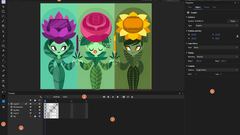 | A tour of the workspace | 6 | Find your way around Phoenix: the toolbox and its flyouts, the edit bar and stage controls, the timeline, the Properties panel's tabs, the Library, Color and Swatches panels, and workspaces. |
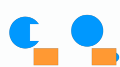 | Merge and object drawing | 7 | See how shapes drawn in merge mode cut into each other, keep shapes apart with Object Drawing, and use Break Apart and Group to move between the two. |
| Frame-by-frame and onion skinning | 8 | Draw a bouncing ball one keyframe at a time with F6 and F7, use onion skinning to see the frames around the one you draw, step through it, and play it on a loop. | |
| Symbols and editing in place | 7 | Turn a drawing into a graphic symbol, place it twice, edit it in place and watch both copies change, then tint one and set how a graphic loops. | |
| Shape tweens | 8 | Morph a square into a circle with a shape tween, play it, and steer the morph with shape hints. | |
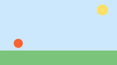 | Motion tweens and the Motion Editor | 10 | Send a ball across the sky with a motion tween, bend its motion path, and ease it in the Motion Editor. |
| Masks | 8 | Shine a spotlight on a picture with a mask layer, then tween the mask to sweep the light across it. | |
| Rigging with layer parenting | 8 | Rig a character's arm and hand to its body with layer parenting, pose the rig, and choose what the children take on from their parents. | |
| Motion with behaviors | 8 | Make a logo pulse, wiggle and multiply with behaviors, change them as it plays, and bake them into keyframes. | |
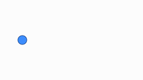 | Write your own behavior | 10 | Write a behavior in JavaScript from an example, see it update as you save, and give it settings of its own. |
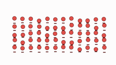 | A crowd from one cycle | 7 | Turn one hopping cycle into a crowd with Repeat in a Line or Grid, then put them out of step with Stagger. |
| Draw-on lines | 7 | Make a line draw itself on with Trim Paths, keying its End, then make it boil with Wiggle Path. | |
| An animated title | 6 | Bring a title in letter by letter with letter animators, keep it moving with a wave, and keep the text editable. | |
| Particles | 6 | Make a fountain of sparks with the Particles behavior: how many, how fast, which way, and how they fall and fade. | |
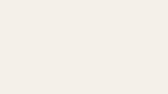 | Track mattes and adjustment layers | 7 | Reveal a title through an animated track matte, then soften the picture with an adjustment layer. |
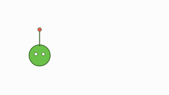 | A bouncy antenna | 5 | Give an antenna on a moving head a springy sway with the Jiggle behavior, working through layer parenting. |
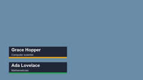 | Lower thirds from a template | 7 | Fill in a lower-third template's name, role and color for each instance, and render one for each row of a spreadsheet. |
| Motion blur, echo and time | 6 | Smear a fast comet with motion blur, give it a trail of echoes, and hold its poses for animation on twos. | |
| Glow and wipes | 8 | Make a title glow with an adjustment layer, then wipe it on with a keyed Linear Wipe. | |
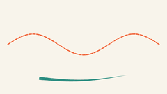 | Dashes and text on a path | 10 | Turn a line into marching dashes, taper a brush stroke, and send words traveling along a curve. |
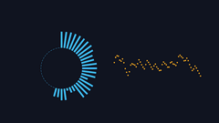 | A sound visualizer | 6 | Make bars that dance to music with the Audio Spectrum behavior, and a line that ripples with the sound wave with Audio Waveform. |
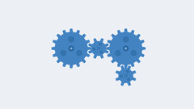 | Controls on a null | 10 | Turn a machine of gears from one keyed dial, each at its own speed, and change all their colors at once, with controls on a rig and Link to Control. |
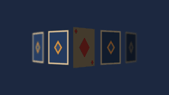 | 3D cards in the light | 9 | Fan out a row of cards in 3D, light them with a warm lamp, focus on the ace, and swing it so it catches the light. |
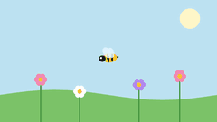 | Motion Sketch | 6 | Fly a bee round a meadow by moving the pointer while the movie plays, then make it buzz with a wiggle on top. |
| A template that fits | 9 | Pin a lower third's plate to its name so it stretches to fit, fill in a font, a checkbox and a list, and keep its timing on a longer span. | |
| Glow through a node graph | 8 | Composite a title through a node graph: a Glow and a hue shift wired between its layers and the output, each step shown as a picture. | |
| Effects on one instance | 6 | Give one of two signs a glowing outline and a ripple of its own, effects on the instance rather than on a layer. | |
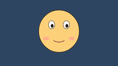 | Lip sync | 6 | Make a character say a line: Phoenix listens to the voice and keys a mouth symbol's shapes to it, then you touch up a shape with the Frame Picker. |
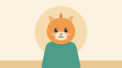 | A head turn on a controller | 8 | Turn a cat's head with one slider: a master controller slides its face, swaps its ears' drawing and tips its tuft, then keys each pose for you. |
Write your own lessons
A lesson is a folder holding a lesson.json file, and, if it starts from prepared artwork, that document. Put the folder in the tutorials folder in Phoenix's application data folder; the Tutorials dialog shows where that is and opens it. A lesson there with the same folder name as a built-in one takes its place, which lets a studio adapt a lesson to its own pipeline.
{
"title": "Our cut-out rig",
"summary": "Pose the studio's standard character.",
"minutes": 8,
"order": 50,
"tags": ["Rigging", "Animation"],
"start": {"document": "start"},
"steps": [
{
"title": "Pick the Selection tool",
"text": "<p>Press <kbd>V</kbd>.</p>",
"target": "tool:Selection",
"wait": {"tool": "Selection"}
}
]
}- tags
- What the lesson is about, to find it by in the Tutorials dialog: the same names as the built-in lessons (
Getting Started,Drawing,Animation,Symbols,Rigging,Motion Graphics,Effects,Text,Templates,Scripting,Sound,3D) or new ones of your own. - thumbnail
- Not a setting but a file: a
thumbnail.gif(which plays when the lesson is picked) orthumbnail.pngin the lesson's folder, 240 by 135 pixels or so.tools/lesson_thumbnails.pyin Phoenix's source makes one from a lesson's final. - start
{"new": {"width": 1280, "height": 720, "fps": 24}}for a new document, or{"document": "start"}for a document in the lesson's folder: an XFL folder, an.flaor a.phx. It opens as an untitled copy.- text
- Rich text: paragraphs,
<b>,<i>, links, and<kbd>for keys. A step can also have animage, a picture or animated GIF in the lesson's folder. - target
- What to circle:
tool:Oval; a menu command,menu:Insert/Timeline/Keyframe; a panel,dock:Library; a panel's tab,tab:Properties/Frame; a field by its label,label:Properties/Ease; timeline frames,frame:Layer_1:24orframe::2-23for the top layer; the ruler,ruler:12; the stage or a part of it in document pixels,stage:60,240,320,320; or a control by name, such aswidget:timelinePlay. - final
- Optional: the document as the lesson leaves it (or just before a last step, such as baking, that would hide how it was made), in the lesson's folder, the same kinds as
start:"final": "final". With it, the reader can click Show Final. - wait
- What moves the lesson on:
{"tool": "Oval"};{"command": "Convert to Symbol"}, an edit by the name shows for it;{"action": "File/Export/Export Movie"}, a menu command run;{"frame": 24};{"selection": "shape"}(orinstance,text,any,none);{"scope": "symbol"}or"scene"; or{"playing": true}. Without one, the reader clicks Next.
To check a lesson without stepping through it, run Phoenix lessons --check (see Command line): it lists every lesson and any target or wait that Phoenix cannot find.